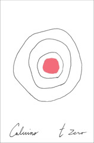

t zero
Ti con zero
If Cosmicomics was the start of Calvino going weird, t zero is a bit less successful but a true continuation. The stories here are less personal; Qfwfq is barely present as a character, and the focus seems largely on the theories that inspired the writing, and the writing itself, rather than the story that results.
Take the Priscilla section. Mitosis is almost a self-caricature, where Calvino maybe self-consciously, intentionally makes his writing as convoluted, continuous, repetitious as he can. That's lessened in Meiosis and even more in Death, but I don't love these cell biology stories as stories as much as I do the others.
That said, I do think it would be fascinating to have biology students try to anthropomorphize individual cells as part of learning about cell division and reproduction, and then compare their stories to Calvino's. For as much friction I felt reading Mitosis, I found knowing the underlying processes to both illuminate and be illuminated by the narrative.
But there are some stunning pieces here, as well. "The Count of Monte Cristo" feels at least informed by Borges' "Pierre Menard, Author of the Quixote" (though that doesn't come in until Dumas and his assistants show up) -- but more than that, in addition to revisiting other themes around infinity, geometry, and possibility that we've seen in the collection, it also feels like a bridge to the metafictional future that we'll get in If on a winter's night a traveler.
And then there's possibly my new favorite Calvino piece: "The Origin of the Birds." If I'm impressed at the metafiction in "The Count of Monte Cristo," I'm blown away by it in this story. I'm a big fan of Scott McCloud's Understanding Comics, and using verbal descriptions of visual storytelling to convey the story here is mind-bending, engaging, and inspiring.